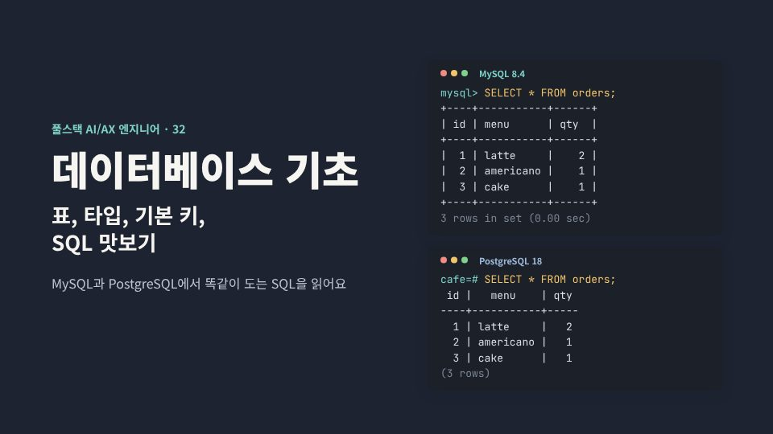
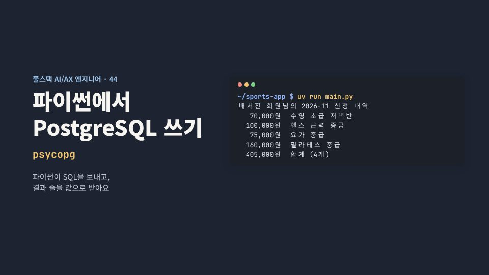

4번째 이정표
데이터베이스 다루기
이 이정표를 지나면 SQL로 표를 만들고 골라 볼 수 있어요.
연습 과제
카페 주문 표 만들고 골라 보기
orders표를 만들고 주문 다섯 건을 넣어요- 5,000원 넘는 주문만 골라 봐요
- 메뉴별 주문 수를 세요
- 다른 표(
menu)와 이어 붙여 메뉴 이름을 같이 봐요
막히면 힌트 보기
- 표를 만드는 문장은 32의
CREATE TABLE장을 봐요 - 조건은
WHERE, 세기는COUNT(*)와GROUP BY예요 - 두 표를 이을 때는
JOIN ... ON을 써요
배우는 자료

32 · 데이터베이스 기초 (표, 타입, 기본 키, SQL 맛보기)
표, 행, 열, 타입, 기본 키를 익히고 SQL 네 문장을 MySQL과 PostgreSQL에서 나란히 읽어요

36 · SQL 1 (골라 보기, 고치기, 자료형)
열마다 자료형을 고르고, 표에서 필요한 줄만 골라 보고 고치고 지워요

39 · SQL 4 (집계 함수와 GROUP BY)
여러 줄을 COUNT, SUM, AVG로 접고, GROUP BY로 묶어 묶음마다 세고, HAVING으로 묶음을 골라요

44 · 파이썬에서 PostgreSQL 쓰기 (psycopg)
파이썬 프로그램이 psycopg로 kant_shop에 접속해서 강좌 목록을 받아 찍고, %s로 값을 넘겨 수강 신청을 저장해요
스스로 확인해요
WHERE와HAVING은 언제 각각 쓰나요?LEFT JOIN을 쓰면 짝이 없는 줄은 어떻게 나오나요?BEGIN없이DELETE하면 되돌릴 수 있나요?